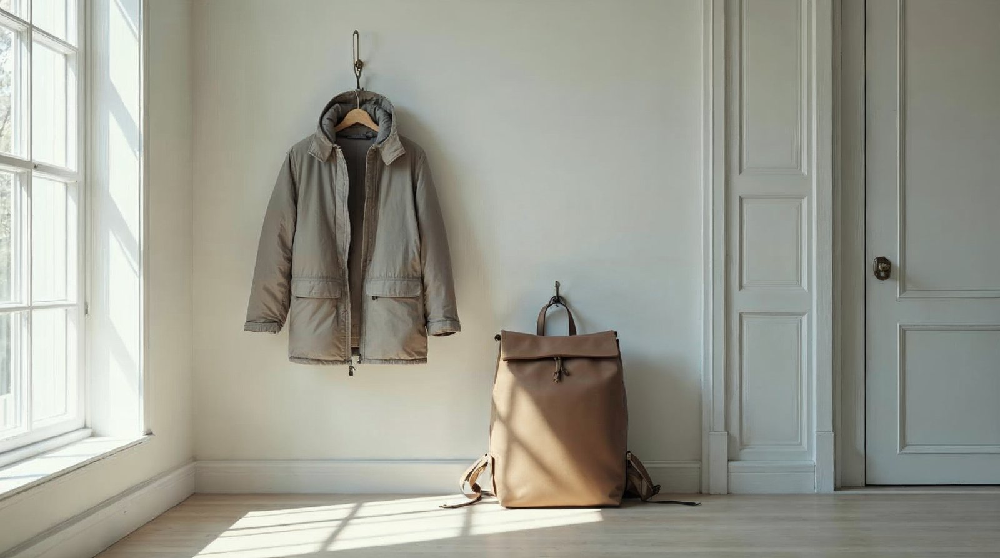
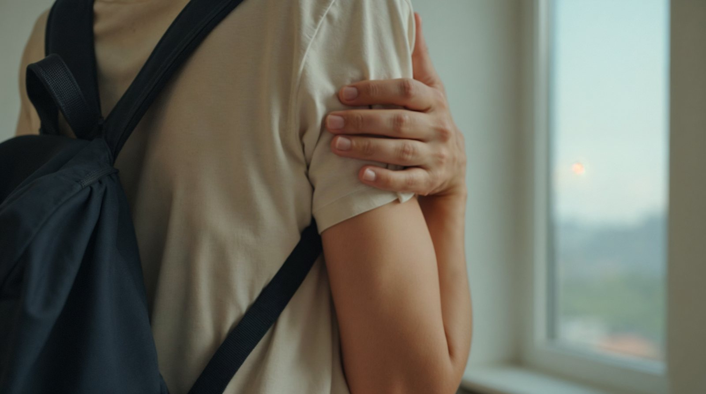
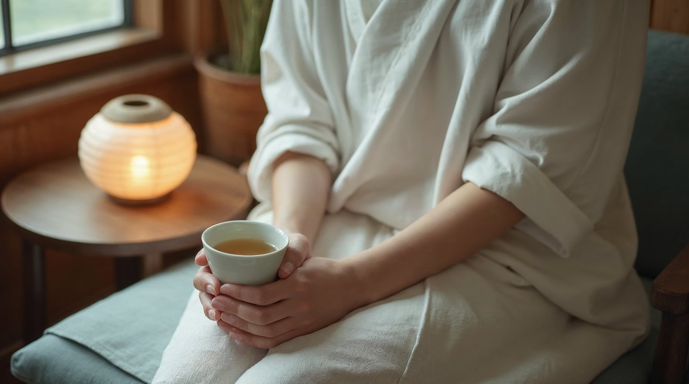
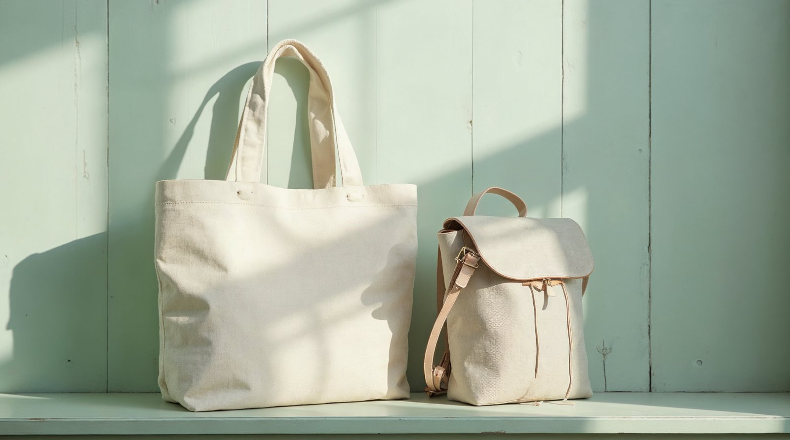
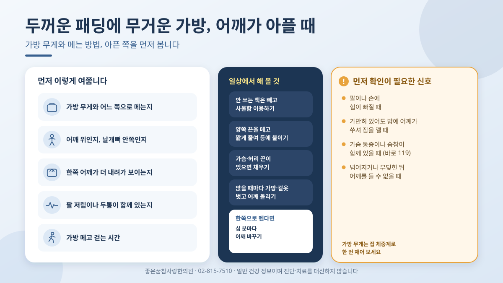

이종호 한의사 감수좋은꿈참사랑한의원 대표원장 (한의사 면허번호 19769)발행 2026-11-25 · 수정 2026-11-26
이 글의 차례
- 왜 이런 불편이 생길 수 있나요
- 어깨 위가 아픈 것과 날개뼈 안쪽이 아픈 것은 어떻게 다른가요?
- 스스로 점검해 보는 목록
- 먼저 이렇게 여쭙니다
- 가방은 어떻게 싸고 어떻게 메면 덜 아플까요?
- 일상에서 먼저 해 볼 수 있는 것
- 겉옷은 무엇을 고르면 어깨가 편할까요?
- 하루 공부 사이사이에 어깨를 어떻게 풀까요?
- 책상과 의자는 어떻게 맞추면 좋을까요?
- 왜 겨울 아침에 어깨가 더 뻐근하게 느껴질까요?
- 크로스백이나 숄더백은 어떤가요?
- 계단과 지하철에서는 무엇을 조심하나요?
- 노트북과 두꺼운 문제집은 꼭 들고 다녀야 할까요?
- 아이 책가방도 같은 원리로 보면 될까요?
- 어깨가 아플 때 따뜻하게 할까요, 쉬게 할까요?
- 시험이 가까울수록 더 아파지는 것은 왜일까요?
- 잠자리에서는 무엇을 살피나요?
- 처음 바꿔 볼 한 가지를 고른다면 무엇인가요?
- 한의원에서 함께 살필 수 있는 경우
- 이렇게 기록해 오시면 상담이 쉬워집니다
- 이런 증상은 먼저 확인이 필요합니다
겨울에 어깨가 유독 처지고 아프다면, 겉옷 무게에 가방 무게가 더해진 것은 아닌지 먼저 살펴볼 만합니다. 노량진 학원가를 오가는 수험생은 두꺼운 패딩 위에 책이 가득 든 가방을 메고 하루에도 몇 번씩 계단을 오르내립니다. 미끄러운 패딩 위에서는 가방끈이 흘러내려 한쪽 어깨를 계속 추켜올리게 되기 쉽습니다.
예를 들어 문제집 다섯 권과 노트북, 물병을 넣은 가방은 생각보다 무겁습니다. 집에 있는 체중계로 가방 무게를 한 번 재어 보시면 줄일 것이 눈에 들어옵니다.
재는 방법은 간단합니다. 먼저 가방 없이 체중계에 올라 숫자를 보고, 가방을 메고 다시 올라 그 차이를 적으면 됩니다. 여기에 겨울 패딩 무게까지 재어 보면, 어깨가 하루 종일 얼마를 지고 다니는지 숫자로 보입니다. 숫자를 한 번 보고 나면 짐을 줄일 마음이 저절로 생깁니다.
여름에는 같은 가방을 메고도 괜찮았는데 겨울만 되면 어깨가 아프다는 분이 많습니다. 가방은 그대로인데 어깨 위에 얹히는 옷이 달라지고, 추위에 몸을 움츠리는 시간이 길어졌기 때문입니다.
왜 이런 불편이 생길 수 있나요
- 겉옷과 가방의 무게가 함께 어깨를 아래로 누릅니다.
- 가방끈이 흘러내리지 않게 하려고 한쪽 어깨를 올린 채 걷게 됩니다.
- 두꺼운 옷 때문에 팔을 자연스럽게 흔들기 어렵습니다.
- 추위로 움츠린 자세가 더해져 등 위쪽이 둥글게 말립니다.
패딩은 겉감이 매끄러워 가방끈이 잘 미끄러집니다. 끈이 흘러내릴 때마다 어깨를 살짝 올려 붙잡는 동작이 하루에 수백 번 반복되면, 어깨 위 근육이 쉴 틈 없이 일하게 됩니다.
또 패딩이 두꺼우면 끈 길이를 길게 늘려 메게 됩니다. 그러면 가방이 등 아래로 처져 엉덩이 쪽에 매달리고, 그 무게를 버티려고 상체가 앞으로 숙여집니다. 어깨와 함께 허리까지 피곤해지는 이유입니다.
어깨 위가 아픈 것과 날개뼈 안쪽이 아픈 것은 어떻게 다른가요?
어깨 위, 목과 어깨가 만나는 자리가 아프다면 가방끈이 누르는 자리와 겹치는 경우가 많습니다. 가방을 내려놓으면 조금 가벼워지고, 손으로 눌러 보면 뭉친 줄이 만져지기도 합니다.
날개뼈 안쪽, 등 한가운데 가까운 자리가 결리는 것은 움츠린 자세와 관련이 깊습니다. 오래 앉아 있다 일어설 때 더 뻐근하고, 가슴을 펴고 숨을 크게 쉬면 당긴다고 표현하시곤 합니다.
두 자리가 함께 아픈 분도 많습니다. 어느 쪽이 먼저 시작됐는지, 가방을 메는 시간과 앉아 있는 시간 중 어느 쪽 뒤에 더 심한지를 알면 무엇부터 바꿀지 정하기 쉽습니다.
스스로 점검해 보는 목록
- 가방 무게를 재어 본 적이 없다
- 가방을 한쪽 어깨로만 메는 날이 많다
- 가방끈이 자꾸 흘러내려 다시 올려 멘다
- 가방 밑부분이 엉덩이보다 아래로 내려온다
- 거울을 보면 한쪽 어깨가 더 높거나 낮아 보인다
- 앉아서도 패딩을 벗지 않고 있는 시간이 길다
- 저녁이 되면 목을 돌리기 불편하다
해당하는 항목이 많을수록 가방과 옷차림을 먼저 바꿔 보시길 권합니다. 목록은 진단이 아니라 습관을 돌아보는 도구로 써 주세요. 표시한 항목이 적어도 어깨가 계속 불편하다면, 목록보다 지금 느끼는 불편을 믿고 상담을 받아 보세요. 한 달쯤 뒤에 같은 목록을 다시 체크해 보면 바뀐 습관이 눈에 보입니다.

먼저 이렇게 여쭙니다
- 가방 무게가 어느 정도이고 어느 쪽으로 메나요?
- 아픈 곳이 어깨 위인가요, 날개뼈 안쪽인가요?
- 한쪽 어깨가 더 내려가 보인다는 말을 들은 적이 있나요?
- 팔이 저리거나 두통이 함께 있나요?
- 하루에 가방을 메고 걷는 시간이 얼마나 되나요?
가방은 어떻게 싸고 어떻게 메면 덜 아플까요?
무거운 책과 노트북은 등에 가장 가까운 칸에 넣고, 가벼운 필통이나 목도리는 바깥쪽에 넣어 주세요. 같은 무게라도 무게 중심이 등에 붙어 있으면 어깨가 뒤로 끌려가지 않습니다.
끈 길이는 가방 밑부분이 허리띠 높이쯤에 오도록 줄여 주세요. 패딩을 입은 날은 끈을 다시 맞춰야 합니다. 아침에 끈 길이를 한 번 조정하는 습관이 하루의 어깨를 바꿉니다.
끈이 미끄러진다면 끈에 미끄럼을 막는 덧대를 다는 방법도 있습니다. 가슴 끈을 채우면 끈이 양쪽으로 벌어지지 않아 어깨를 추켜올릴 일이 줄어듭니다.

일상에서 먼저 해 볼 수 있는 것
- 그날 쓰지 않는 책은 빼고 사물함 이용하기
- 양쪽 끈을 모두 메고 끈 길이를 짧게 줄여 등에 붙이기
- 가슴 끈이나 허리 끈이 있으면 채우기
- 앉을 때마다 가방과 겉옷을 벗고 어깨 돌리기
- 한쪽으로 메야 한다면 십 분마다 어깨 바꾸기
겉옷은 무엇을 고르면 어깨가 편할까요?
같은 따뜻함이라면 무거운 한 벌보다 가벼운 옷을 여러 겹 입는 쪽이 어깨 부담이 적습니다. 실내에 들어가면 겉옷을 벗기도 쉬워 앉아 있는 동안 어깨가 쉴 수 있습니다.
패딩을 고를 때는 어깨선이 너무 넓어 팔을 들 때마다 옷이 끌려 올라가지 않는지 확인해 보세요. 팔을 앞으로 뻗었을 때 등이 당기는 옷은 하루 종일 어깨를 앞으로 끌어당깁니다.
목도리를 두르면 목이 따뜻해져 어깨를 덜 움츠리게 됩니다. 추워서 생기는 긴장은 따뜻하게 하는 것만으로도 조금 덜 수 있습니다.
하루 공부 사이사이에 어깨를 어떻게 풀까요?
한 시간 공부하면 일어나서 1분만 움직여 보세요. 어깨를 귀 쪽으로 끌어올렸다가 숨을 내쉬며 툭 떨어뜨리기를 다섯 번, 날개뼈를 등 가운데로 모았다 풀기를 다섯 번이면 충분합니다.
양손을 깍지 끼고 등 뒤로 뻗어 가슴을 여는 동작도 움츠린 자세를 되돌리는 데 도움이 됩니다. 아프지 않은 범위까지만 하시고, 반동을 주지 말고 천천히 하세요.
점심을 먹고 돌아오는 길에는 가방을 두고 나와 빈손으로 십 분 걸어 보세요. 팔을 자연스럽게 흔들며 걷는 것만으로도 어깨가 하루 동안 굳은 자세에서 잠깐 벗어납니다.
책상과 의자는 어떻게 맞추면 좋을까요?
가방을 내려놓은 뒤에도 어깨가 쉬지 못하는 경우가 많습니다. 책상이 높으면 팔을 올린 채 필기하느라 어깨가 들리고, 낮으면 고개를 숙여 등이 말립니다.
의자에 깊숙이 앉아 팔꿈치를 90도로 굽혔을 때 책상 위에 팔이 편하게 얹히는 높이가 좋습니다. 책을 독서대에 올려 눈높이에 가깝게 두면 고개를 숙이는 시간이 줄어듭니다.
자습실이나 독서실 책상을 바꾸기 어렵다면 의자 높이와 방석으로 맞춰 보세요. 발이 바닥에 닿지 않는다면 발 받침이 될 만한 상자를 하나 두는 것도 방법입니다.
왜 겨울 아침에 어깨가 더 뻐근하게 느껴질까요?
밤사이 방이 식으면 몸은 열을 지키려고 어깨를 웅크린 채 잠듭니다. 그 상태로 일어나 바로 두꺼운 패딩을 입고 무거운 가방을 메면, 아직 풀리지 않은 근육에 무게가 한꺼번에 얹힙니다.
그래서 겨울 아침에는 집을 나서기 전에 어깨를 먼저 깨워 주세요. 따뜻한 물로 세수하며 목 뒤를 데우고, 어깨를 크게 뒤로 다섯 번 돌린 뒤 가방을 메면 첫 계단부터 느낌이 다릅니다.
밖에 나가서도 처음 십 분은 천천히 걸으세요. 몸이 데워지기 전에 급하게 뛰어 버스를 잡으려 하면, 가방이 출렁이며 어깨를 세게 잡아당기게 됩니다.
크로스백이나 숄더백은 어떤가요?
한쪽 어깨에만 메는 가방은 가벼운 짐일 때는 편하지만, 무거워지면 메는 쪽 어깨를 올리고 반대쪽으로 몸을 기울여 균형을 잡게 됩니다. 하루 종일 몸이 한쪽으로 휜 채 걷는 셈입니다.
크로스백은 끈을 몸에 대각선으로 걸어 숄더백보다는 무게가 나뉘지만, 여전히 한쪽 어깨에 끈이 걸립니다. 무거운 날에는 백팩으로 바꾸고, 가벼운 날에만 크로스백을 쓰는 식으로 나눠 보세요.
손에 드는 가방은 어깨 부담은 적지만 손목과 팔꿈치가 피곤해질 수 있습니다. 어느 가방이든 무게를 줄이는 것이 먼저이고, 메는 쪽을 자주 바꾸는 것이 다음입니다.
계단과 지하철에서는 무엇을 조심하나요?
계단을 오를 때는 몸이 앞으로 숙여지면서 가방이 뒤로 처집니다. 이때 가슴 끈을 채워 두면 가방이 등에서 떨어지지 않아 어깨가 뒤로 끌려가는 느낌이 줄어듭니다.
붐비는 지하철에서는 가방을 앞으로 메거나 내려서 발 사이에 두는 분이 많습니다. 앞으로 멜 때도 끈 길이를 짧게 해 가방이 배에 붙도록 하고, 오래 서 있어야 한다면 선반에 올려 두는 것도 방법입니다.
손잡이를 잡고 서 있을 때 한 팔만 계속 들고 있으면 그쪽 어깨가 지칩니다. 정거장마다 잡는 손을 바꿔 주시면 양쪽이 고르게 쉽니다.
노트북과 두꺼운 문제집은 꼭 들고 다녀야 할까요?
공부하는 분께 짐을 줄이라고 하면 "다 필요하다"는 대답이 먼저 돌아옵니다. 그래서 저는 하루 일과표를 놓고, 오늘 실제로 펼친 책이 무엇이었는지 저녁에 표시해 보시라고 권합니다.
사흘만 표시해 보면 매일 들고 다니면서 한 번도 펴지 않은 책이 눈에 들어옵니다. 그 책은 사물함이나 집에 두고, 필요한 단원만 복사하거나 분철해서 들고 다니면 가방이 눈에 띄게 가벼워집니다.
노트북은 충전기까지 들면 꽤 무겁습니다. 공부 장소에 충전할 곳이 있다면 충전기는 그곳에 하나 두고 다니는 것만으로도 가방 무게가 줄어듭니다.
아이 책가방도 같은 원리로 보면 될까요?
초등학생과 중학생도 겨울이면 두꺼운 외투 위에 책가방과 신발주머니, 학원 가방까지 들고 다닙니다. 몸이 작은 만큼 같은 무게라도 부담이 더 크게 느껴질 수 있습니다.
아이 가방은 아이 손으로 직접 싸게 하되, 보호자가 일주일에 한 번 꺼내 보며 쓰지 않는 물건이 들어 있지 않은지 함께 확인해 주세요. 끈 길이는 아이 키가 크는 대로 다시 맞춰야 합니다.
아이가 어깨나 등이 아프다고 말하면 가볍게 넘기지 말고, 가방을 메고 서 있는 모습을 뒤에서 한 번 봐 주세요. 한쪽으로 기울어 있다면 가방부터 손보는 것이 순서입니다.
어깨가 아플 때 따뜻하게 할까요, 쉬게 할까요?
가방을 오래 메고 다닌 날 저녁에 어깨가 묵직하게 뭉친 느낌이라면, 따뜻한 물로 씻거나 데운 수건을 어깨 위에 올려 두는 것을 편하게 여기는 분이 많습니다. 데운 뒤 어깨를 천천히 돌려 주면 한결 가벼워집니다.
반대로 계단에서 가방이 출렁이며 어깨를 갑자기 잡아당긴 뒤 한 자리가 콕 찌르듯 아프다면, 그날은 무거운 가방을 메지 말고 쉬게 해 주세요. 아픈데도 같은 가방을 계속 메면 불편이 길어질 수 있습니다.
시험이 가까울수록 더 아파지는 것은 왜일까요?
시험이 다가오면 가방에 넣는 책이 늘고, 앉아 있는 시간도 길어집니다. 잠은 줄고 긴장은 커지니, 어깨를 쉬게 해 줄 시간이 거의 남지 않습니다.
이럴 때일수록 쉬는 시간을 정해 두세요. 공부 계획표에 1분 어깨 풀기 시간을 함께 적어 두면, 바쁜 날에도 잊지 않고 챙기게 됩니다. 잠을 조금이라도 지키는 것도 어깨를 위한 일입니다.
잠자리에서는 무엇을 살피나요?
낮에 무거운 가방으로 뭉친 어깨는 밤사이에 풀려야 합니다. 그런데 엎드려 자거나 한쪽 팔을 베고 자면 어깨가 다시 눌린 채 아침을 맞습니다.
베개는 바로 누웠을 때 목 뒤가 뜨지 않고, 옆으로 누웠을 때 머리와 목이 일직선이 되는 높이를 권합니다. 잠들기 전 따뜻하게 씻고 어깨를 가볍게 돌린 뒤 누우면 한결 편하게 느끼는 분이 많습니다.
처음 바꿔 볼 한 가지를 고른다면 무엇인가요?
여러 가지를 한꺼번에 바꾸려 하면 오래가지 않습니다. 저는 첫 주에는 가방 무게 줄이기 하나만, 둘째 주에는 끈 길이와 가슴 끈 채우기를 더하는 식으로 하나씩 늘려 보시길 권합니다.
일주일씩 해 보고 어깨 느낌을 적어 두면, 어떤 변화가 내 몸에 가장 도움이 되었는지 알 수 있습니다. 그 기록을 가지고 오시면 다음에 무엇을 바꿀지 함께 정하기도 쉬워집니다.

한의원에서 함께 살필 수 있는 경우
- 한쪽 어깨만 유독 뭉치고 처지는 느낌이 있는 경우 어깨 높이와 등의 균형을 함께 살핍니다.
- 날개뼈 안쪽이 결리고 숨을 크게 쉴 때 당기는 경우 등 위쪽의 긴장을 함께 살핍니다.
- 오래 앉아 공부한 뒤 목까지 굳는 경우 앉는 자세도 이어서 여쭙니다.
좋은꿈참사랑한의원에서는 맥부터 짚으며 불편한 동작과 시간대를 여쭙고, 필요하다고 판단될 때 아픈 곳과 주변을 눌러 보거나 초음파로 살핀 뒤, 상태에 맞춰 침·약침·추나 등을 정합니다. 귀가 전에는 집에서 지켜볼 점과 다음에 확인할 일을 알려 드립니다. 건강보험(또는 자동차보험) 적용 여부는 방문 전 전화로 확인해 주세요.
처음 오실 때는 평소 메는 가방을 그대로 가져오셔도 좋습니다. 가방을 멘 채로 서 계신 모습과 내려놓은 모습을 함께 보면, 어깨가 어느 쪽으로 기우는지 말로 설명하는 것보다 훨씬 빨리 알 수 있습니다. 서고, 걷고, 앉는 동작도 함께 보면서 어깨를 올리거나 팔을 들 때 어디서 걸리는지 확인합니다.
공부 일정이 빠듯한 수험생이라면 진료 시간과 간격도 일정에 맞춰 함께 의논합니다. 몸을 돌보는 일이 공부 시간을 너무 빼앗지 않도록, 집에서 할 수 있는 것을 먼저 알려 드립니다.

이렇게 기록해 오시면 상담이 쉬워집니다
- 가방 무게와 메는 방법, 걷는 시간
- 아픈 쪽과 가장 불편한 시간대
- 팔 저림이나 두통이 있었는지
- 책상과 의자 높이, 앉아 있는 시간
일주일 동안 가방을 가볍게 바꾼 날과 그대로 멘 날의 어깨 느낌을 0에서 10까지 적어 보시면, 짐을 줄이는 것이 내 어깨에 얼마나 도움이 되는지 스스로 확인할 수 있습니다.
이런 증상은 먼저 확인이 필요합니다
- 팔이나 손에 힘이 빠지는 경우
- 가슴 통증이나 숨참이 함께 있는 경우
이런 신호가 있으면 한의원보다 가까운 병원이나 응급실을 먼저 찾으세요.

여쭙는 것
- 가방 무게가 어느 정도이고 어느 쪽으로 메나요?
- 아픈 곳이 어깨 위인가요, 날개뼈 안쪽인가요?
- 한쪽 어깨가 더 내려가 보인다는 말을 들은 적이 있나요?
생활에서 해 볼 것
- 그날 쓰지 않는 책은 빼고 사물함 이용하기
- 양쪽 끈을 모두 메고 끈 길이를 짧게 줄여 등에 붙이기
- 가슴 끈이나 허리 끈이 있으면 채우기
한의원에서 함께 살필 것
- 한쪽 어깨만 유독 뭉치고 처지는 느낌이 있는 경우 어깨 높이와 등의 균형을 함께 살…
- 날개뼈 안쪽이 결리고 숨을 크게 쉴 때 당기는 경우 등 위쪽의 긴장을 함께 살핍니다.
- 오래 앉아 공부한 뒤 목까지 굳는 경우 앉는 자세도 이어서 여쭙니다.
먼저 확인이 필요한 신호
- 팔이나 손에 힘이 빠지는 경우
- 가슴 통증이나 숨참이 함께 있는 경우
한눈에 보는 표
| 구분 | 핵심 |
|---|---|
| 여쭙는 것 | 가방 무게가 어느 정도이고 어느 쪽으로 메나요? 아픈 곳이 어깨 위인가요, 날개뼈 안쪽인가요? |
| 생활에서 해 볼 것 | 그날 쓰지 않는 책은 빼고 사물함 이용하기 양쪽 끈을 모두 메고 끈 길이를 짧게 줄여 등에 붙이기 |
| 한의원에서 함께 살필 것 | 한쪽 어깨만 유독 뭉치고 처지는 느낌이 있는 경우 어깨 높이와 등의 균형을 함께 살핍니다. 날개뼈 안쪽이 결리고 숨을 크게 쉴 때 당기는 경우 등 위쪽의 긴장을 함께 살핍니다. |
| 먼저 확인이 필요한 신호 | 팔이나 손에 힘이 빠지는 경우 가슴 통증이나 숨참이 함께 있는 경우 |
자주 묻는 질문
한쪽 어깨가 내려갔는데 추나로 맞추나요?
먼저 왜 그렇게 보이는지 자세와 생활 습관을 살핍니다. 추나를 할지는 진찰 뒤 정하며, 가방 메는 방법을 바꾸는 것이 함께 가야 합니다.
캐리어형 가방을 쓰면 어떨까요?
계단이 적은 길이라면 어깨 부담을 줄일 수 있습니다. 계단이 많으면 들어 올릴 때 허리에 부담이 될 수 있어 길에 맞춰 고르세요.
스트레칭은 어떤 것을 하나요?
어깨를 귀 쪽으로 올렸다 툭 내리기, 날개뼈를 모았다 풀기처럼 아프지 않은 동작을 자주 하는 것을 권합니다.
좋은꿈참사랑한의원은 재진 때 지난번 이야기부터 이어서 여쭙니다. 진료시간과 예약은 오시는 길에서 확인하세요.
어디서 상담받을 수 있나요?
좋은꿈참사랑한의원은 서울 동작구 만양로2길 2 신성빌딩 3층·5층(서울 동작구 상도동, 7호선 상도역 3번 출구 근처)에 있습니다. 한의사 3명(이종호 대표원장, 조영기 수석진료원장, 정원영 진료원장)이 진료합니다. 진료시간은 평일 09:30~20:00(점심 13:00~14:00), 토·일·공휴일 09:30~15:00이며, 방문 전 전화로 확인을 권합니다. 예약은 네이버 예약, 카카오톡 상담, 전화 02-815-7510로 받습니다.
이 글은 일반적인 건강 정보이며 개인의 진단이나 치료를 대신하지 않습니다. 증상이 있거나 복용 중인 약이 있다면 진료를 통해 확인하세요. 치료 효과는 개인마다 다를 수 있습니다.
작성 기준: 일반적으로 알려져 있는 건강 정보를 참고해 정리했습니다(대표원장 감수). 증상 기록은 1~2주 동안 하루 1회, 비슷한 시간에 적어 오시면 지난 상태와 비교하기 쉽습니다.